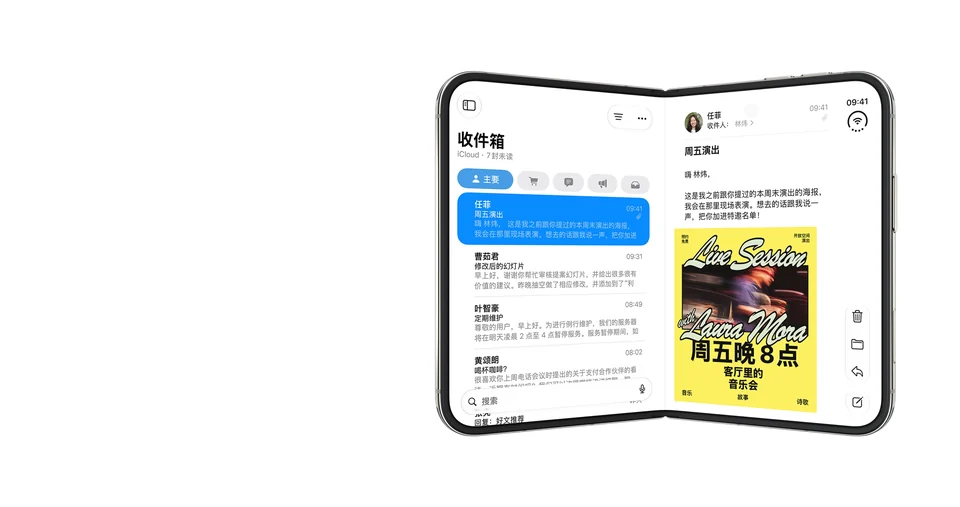
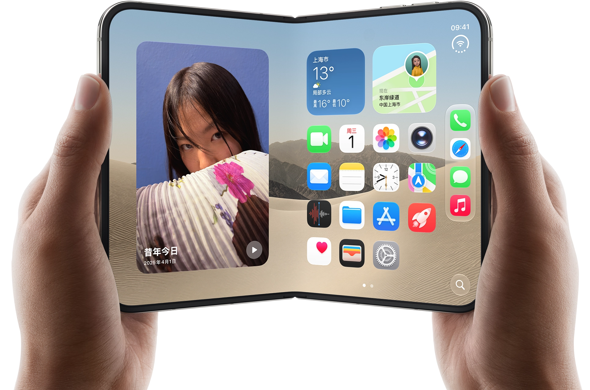
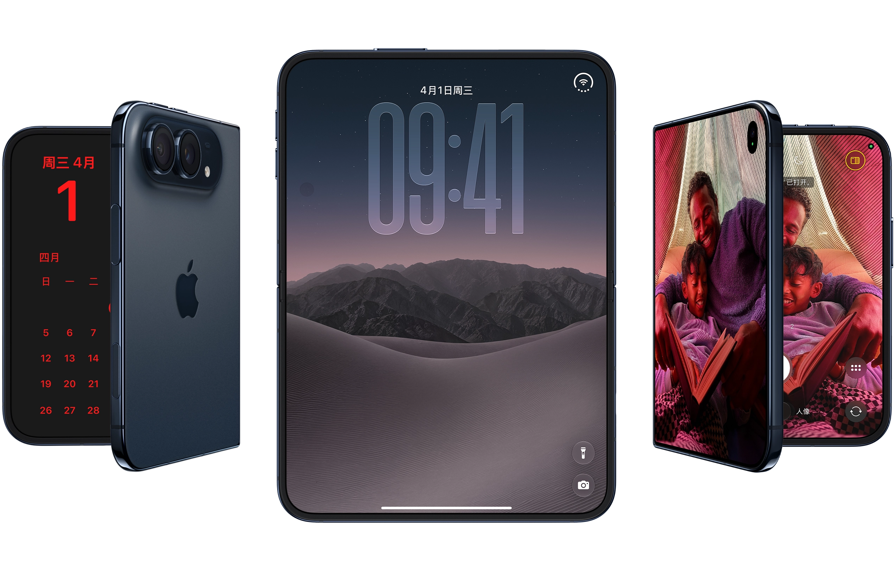
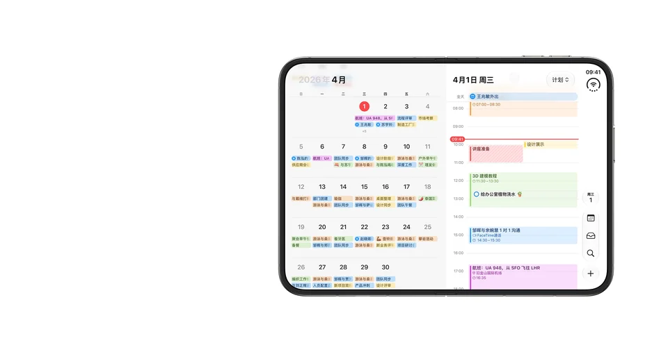
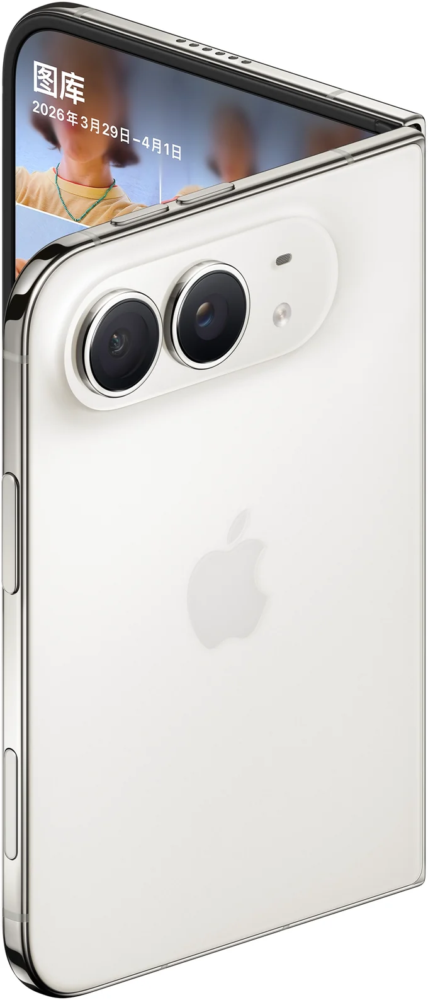
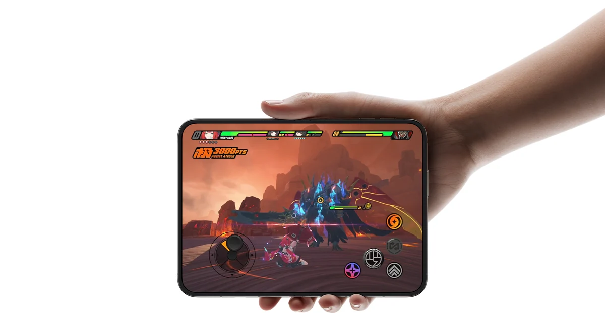

01 / 大屏
视野打开了，
视野打开了，
灵感也跟着来。
7.6 英寸内屏。为喜欢的内容，留出更多空间。


两种配色。不同姿态。
把简洁的美，放在每一次开合之间。

夜空色
精巧的开合在不同姿态之间，自如转换。
钛金属边框与铰链护壳让精致的设计，也有坚固的一面。
左右滑动，找到你的打开方式。
也可以使用下方箭头。

从被拍摄，到一起参与。
让画面里的每个人，都更自在。
让色彩、光影和你的视角，一起进入画面。
Duo 双屏预览，让镜头前的人也能查看画面，一起找到喜欢的角度。

从多任务到沉浸游戏，
A20 Pro 让打开的可能，更进一步。

共 5 个问题
宽阔的内屏适合阅读、观看视频和处理日常事务。支持分屏浏览的应用，还能让两份内容并排呈现。具体功能和可用性请以 Apple 官方介绍为准。
本页展示夜空色与星光白色。可以在上方“每一面，都值得细看”区域点击配色按钮，对比两种外观。
Duo 双屏预览能让被拍摄的人在外屏查看画面，调整姿势和构图。镜头两边的人，可以一起参与拍摄。
iPhone Duo 的内屏为 7.6 英寸超视网膜 XDR 显示屏。屏幕尺寸按对角线测量，实际可视区域会受到圆角等设计影响；详细说明请参阅官方技术规格。
本页是独立设计展示作品。完整的技术规格、功能可用性、售价与购买信息，请访问 Apple 官方产品页面。